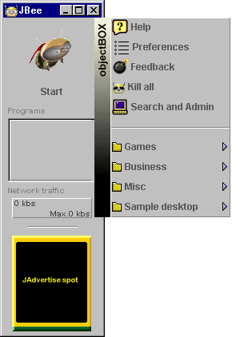
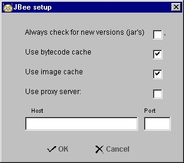
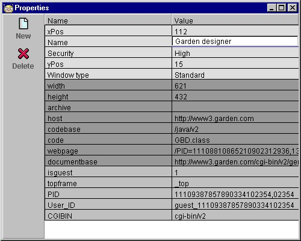

| |
Using
JBee
The 'Start'-button will
pop up JBee's main menu.
This menu will let you
quickly find and execute the applet you want. JBee comes
with many example links, organised in folders (for
example Games). If the applet exists locally, JBee
will load the program from your local disk and it will
pop up almost immediately. If it's the first time you
execute the applet, it will be loaded from the network
and copied onto your local harddisk before it's executed,
thus taking a little more time.
The main menu also
contains the following sub-menus in addition to the
applet links and folders you create yourself:

Help
You are currently viewing
the help pages for JBee.
Preferences
The Preferences dialogue
let you set the global preferences of JBee.
If the 'Check for new
versions of jars' option is checked, JBee will compare
the dates of the installed version with the 'net version.
If they don't match, the 'net version will be downloaded,
thus JBee will always have the most up to date version of
the applet installed (the default is unchecked). The 'Use
bytecode cache' and 'Use image cache' options, tells JBee
if it should cache/install Java programs and/or images
and sound. The default is checked. If you are behind a
firewall, you should check the 'Use proxy server' option
as well as specifying the address and port of your proxy
server (ask your network administrator if you don't
understand any of this. It might also help to take a look
at the setup of your browser). The option is unchecked by
default.

Feedback
This menu option will take
you to web pages which let you sound off on JBee. Do you
love it? Hate it? What's missing? Tell us and we'll
listen and (maybe) act!
Kill All
Clicking the 'Kill All'
menu item, will terminate all applets currently
executing. This feature is especially usefull if you use
JBee to run multiple applets simultaneously (java
desktop).
 Search & Admin
Search & Admin
- Search
The Search
page lets you specify an URL address (for
example, http://www.jars.com) or any keyword
(like invaders, stock, news or whatever).
JBee will search the web and produce a list of
applets which you can test (using the
'Test'-button) and/or copy into the menu
(clicking the 'Save' or 'Save All' buttons). JBee
will remember the last 10 addresses/keywords, and
will also try to auto-complete addresses/keywords
as you write.

- Admin
In the
Admin page, you can create folders,
cut/copy/paste/delete applet links and edit
properties (including applet name, security,
window type and size).

- Organise your applets in
folders
Create
folders by clicking the 'New
Folder'-button. Give it a new name by
double-clicking it. A dialogue prompting
for the new name will pop up. You can
drag and drop, delete, cut and paste
applets and folders to create the menu
you want.
- Edit properties
By
double-clicking on the icons representing
applets, a property window (as shown
below) will pop up. Three shades of gray
indicates what kind of property you see:
JBee properties, applet parameters or
applet properties.

Top
|